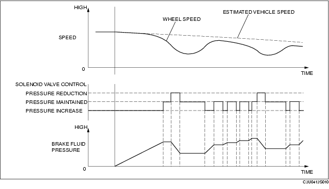

ABS CONTROL OPERATION
id041300184100
• When the ABS CM determines wheel slip conditions based on the signals from the ABS wheel-speed sensors during braking, the ABS CM operates the ABS HU inlet and outlet solenoid valves, reducing and maintaining brake fluid pressure in accordance with the wheel slip factors. Then, when the wheel slip condition has passed, brake fluid pressure is increased and maintained, ensuring braking with a constantly stable brake force.
Operating Condition Transition Diagram
